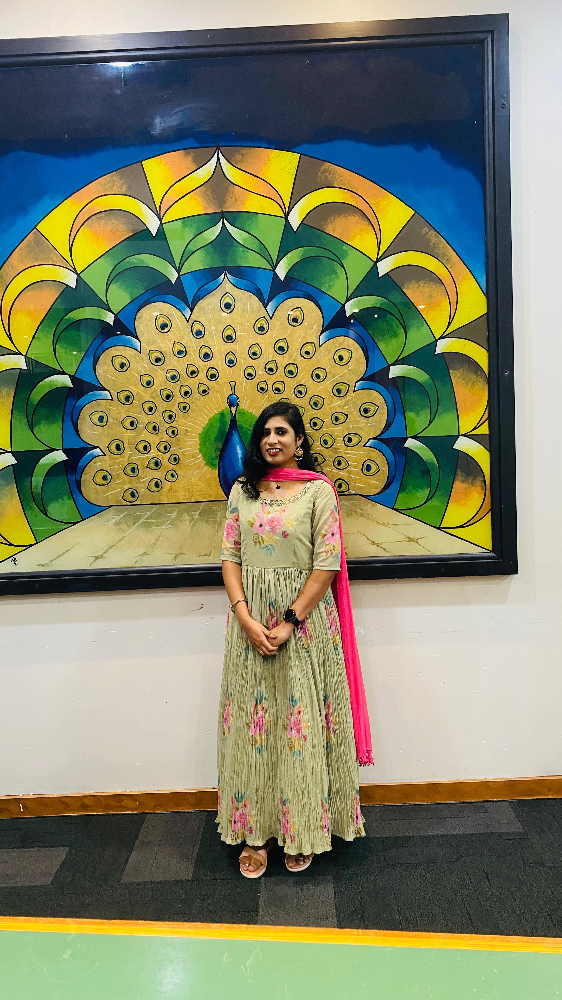

12 rata street,Auckland new zealand
email:lavanyasetti19@gmail.com
0224952082
Professional web Developer with experience in building responsive, accessible, and secure web applications. Strong understanding of modern web standards and development work flow. Effective communicator with the ability to deliver high-quality solutions in fast-paced environment.
B.tech - computer Science and engineering
University of Kakinada, India
2016-2020
intermediate
Sri Chaitanya jr college,India
2014-2016
SSC
ZPH school,India
Fresher-Currently learning and working on live projects